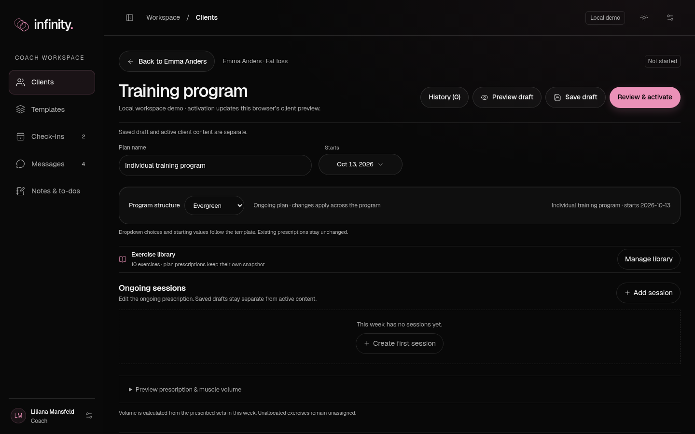
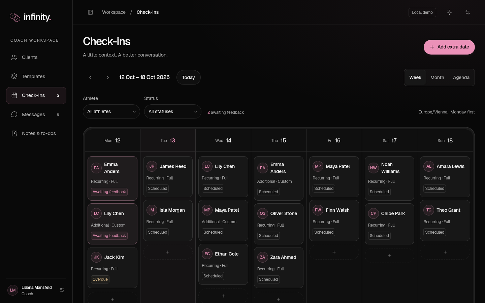
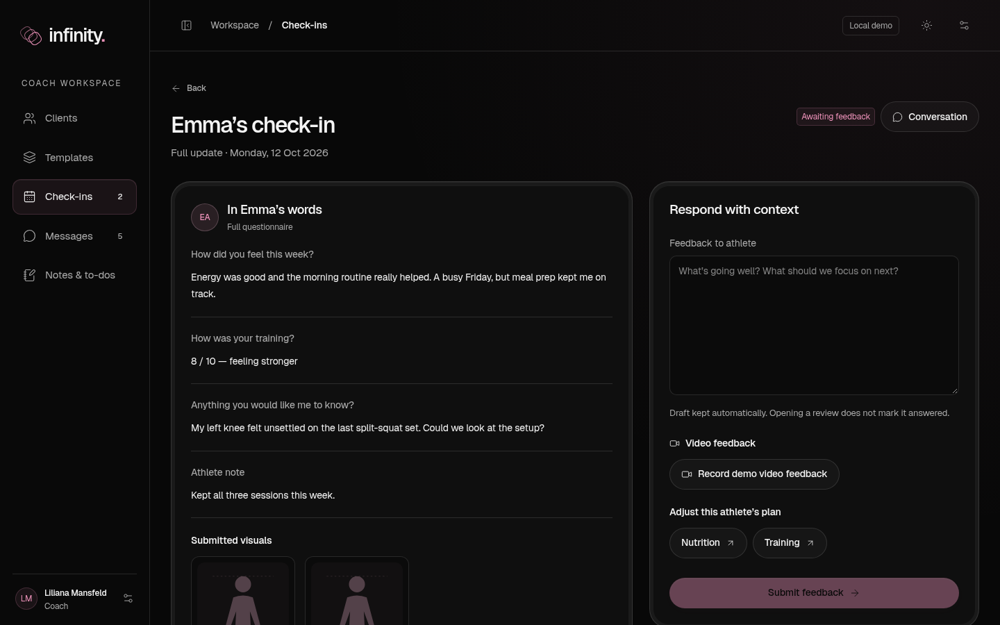

Local product preview — not connected
One workspace.
Both sides of coaching.
Vari8 is a coaching workspace where trainers build training, nutrition and check-ins — and clients follow it all in one clear daily view.
Still in development. This page is a local preview.


Product preview — illustrative demo data
Workflow
A coaching loop you can see
One ordinary week in Vari8 — the coach prepares, the client follows, the check-in comes back, the coach reviews. Illustrative product preview, not a live backend connection.



Step 1 of 4: coach prepares a plan.
Product
Pick a feature, see it for real
Every preview below is an actual Vari8 screen from the design canvas — captured with synthetic demo data.
Training
Coaches build training programs with drafts kept separate from what the client sees — review and activate when ready.
Built
for two.
Working
as one.
COACH PLANS · CLIENT FOLLOWS · BOTH SEE THE SAME WEEK.
Request early accessFor coaches
The whole roster, one desk
- Open the roster and see who submitted, who's awaiting feedback and who needs a nudge — before the week gets away from you.
- Draft a training program or meal plan, preview it as the client, and activate it when it's ready — drafts never leak early.
- Review a check-in with the questionnaire, submitted visuals and trends on one screen, then reply in context.
For clients
Today, made obvious
- One daily view answers “what do I do today” — training session, nutrition targets, habits and weigh-ins together.
- Check-ins arrive on a rhythm your coach sets — a structured update, not a scattered chat thread.
- Log a metric once and see it become a trend — your week, month and season in the same place your coach watches.
Early access
Request early access
Vari8 is in active development and being shared with a small group first. Leave your details to hear when a place opens.